Popcorn Glory — career curves (Step 39)
AUTOMATIC SIMULATION: simulated hands and purchase policies on the game's own rules
(tools/sim/career39.gd). Not players, not fun ratings. Solid: after the Step 39 tuning; dashed: before.
Data: career_after.csv · career_before.csv · career_after.json · traps_after.json
■ average/balanced/3901■ average/early/3901■ average/variety/3901■ idle/balanced/3901■ skilled/balanced/3901■ slow/balanced/3901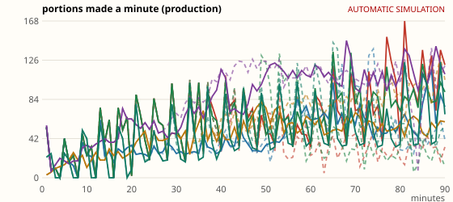
portions made a minute (production) 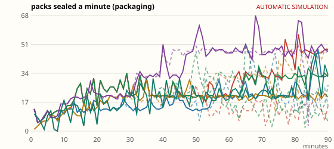
packs sealed a minute (packaging) 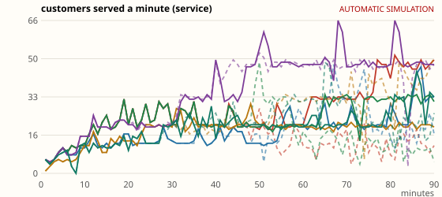
customers served a minute (service) 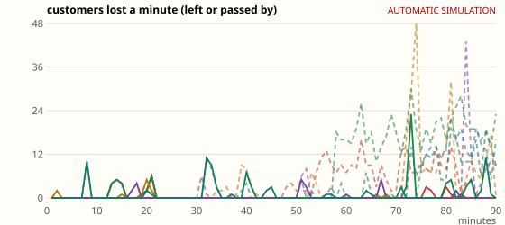
customers lost a minute (left or passed by) 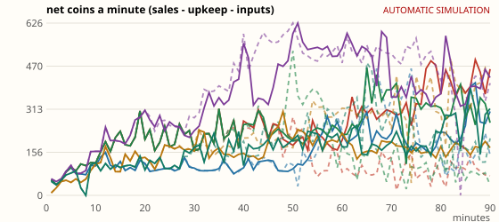
net coins a minute (sales - upkeep - inputs) 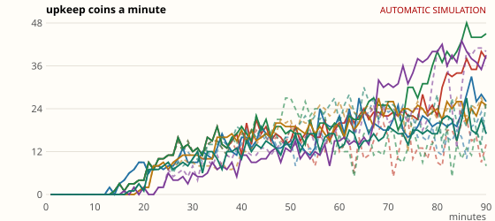
upkeep coins a minute 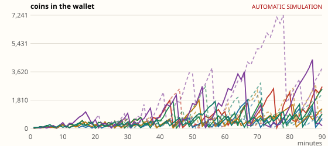
coins in the wallet 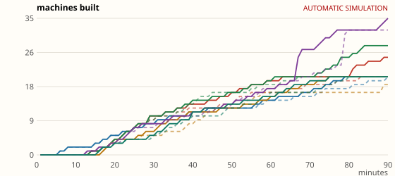
machines built 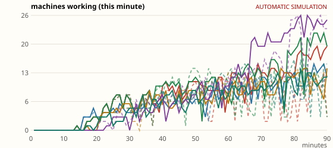
machines working (this minute) 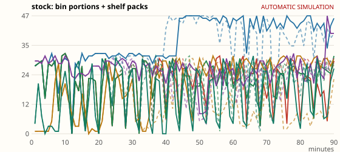
stock: bin portions + shelf packs 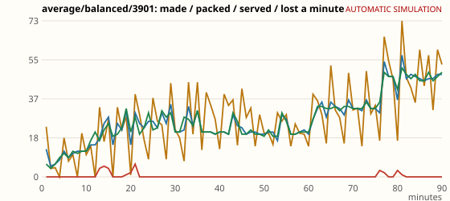
average/balanced/3901 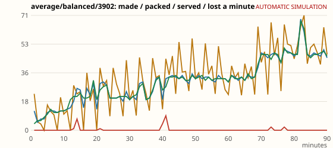
average/balanced/3902 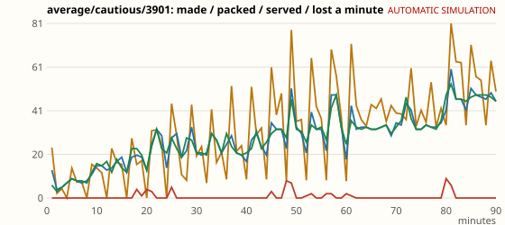
average/cautious/3901 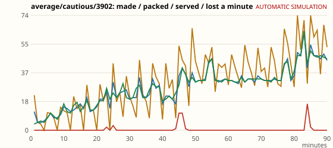
average/cautious/3902 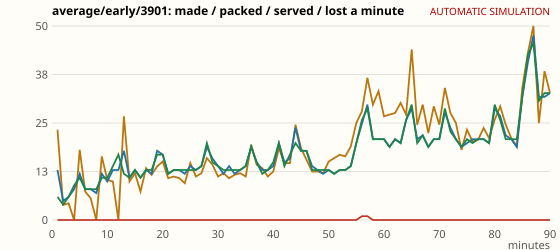
average/early/3901 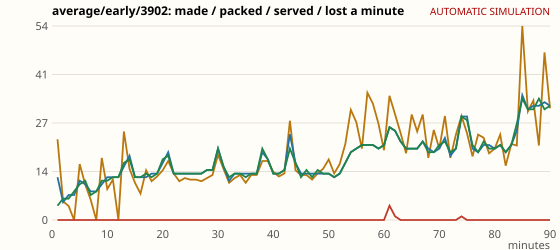
average/early/3902 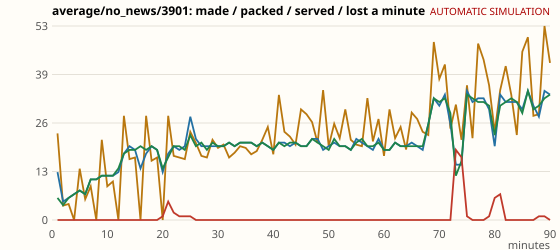
average/no_news/3901 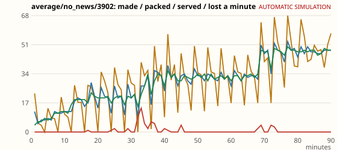
average/no_news/3902 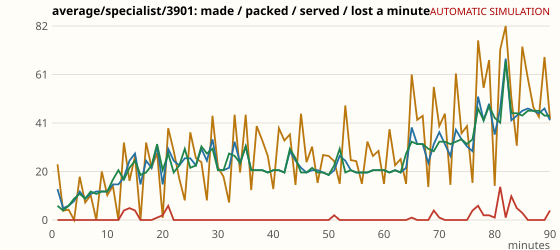
average/specialist/3901 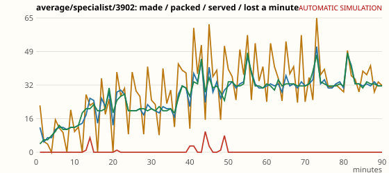
average/specialist/3902 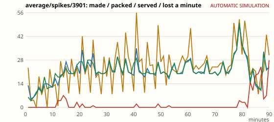
average/spikes/3901 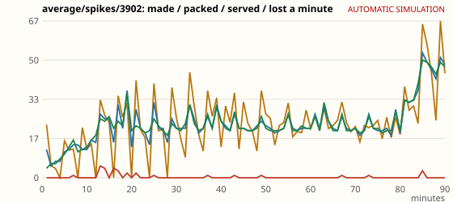
average/spikes/3902 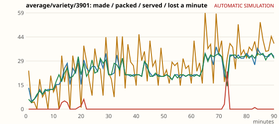
average/variety/3901 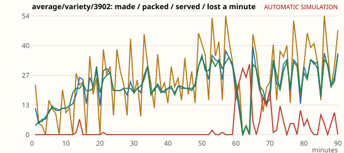
average/variety/3902 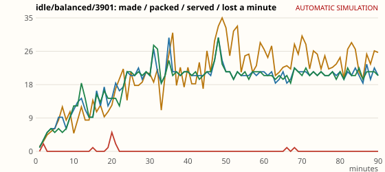
idle/balanced/3901 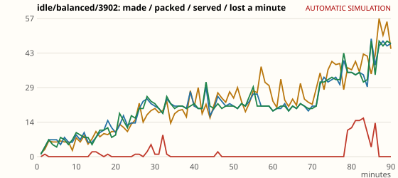
idle/balanced/3902 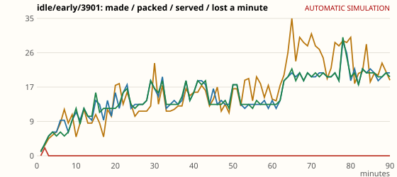
idle/early/3901 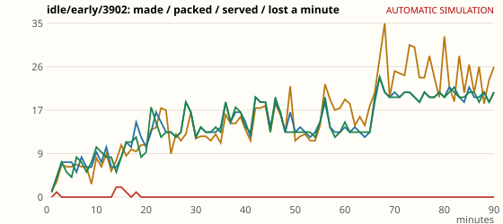
idle/early/3902 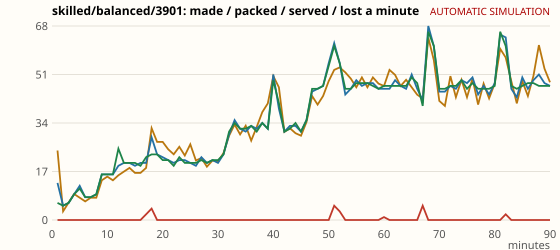
skilled/balanced/3901 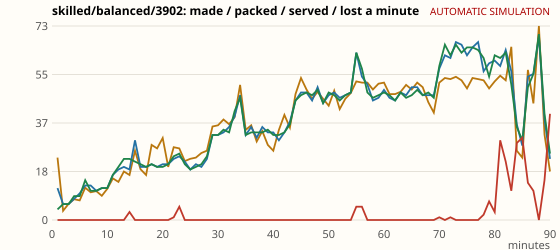
skilled/balanced/3902 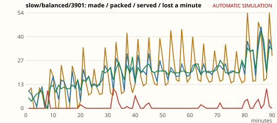
slow/balanced/3901 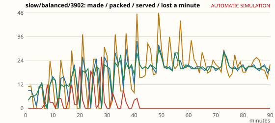
slow/balanced/3902